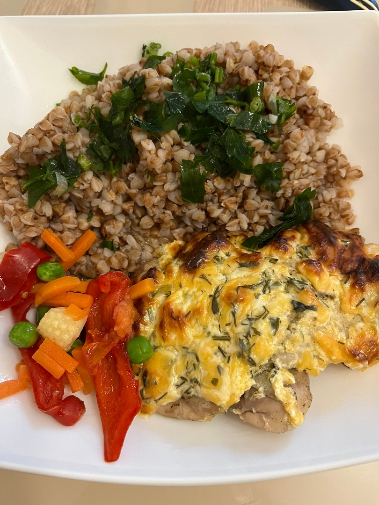

КУРИНАЯ ГРУДКА ПОД СМЕТАННО-СЫРНОЙ ШУБОЙ
КБЖУ на 1 порцию - 370/40/8/39
Время приготовления - 30 минут
Сложность - легко
ИНГРИДИЕНТЫ НА 1 ПОРЦИЮ:
- Филе курицы - 150гр
- Сметана - 30гр
- Сыр лёгкий - 40гр
- Петрушка, чеснок
СПОСОБ ПРИГОТОВЛЕНИЯ:
Шаг 1:
Смешать сметану, сыр, зелень и чеснок.
Шаг 2:
Филе курицы разрезать на ровные куски.
Шаг 3:
Смазать получившимся соусом курицу.
Шаг 4:
Отправить запекаться в разогретую до 180 градусов духовку на 20-25 минут.
Можно подавать с тушеными овощами, либо с любым другим гарниром. ПРИЯТНОГО АППЕТИТА!